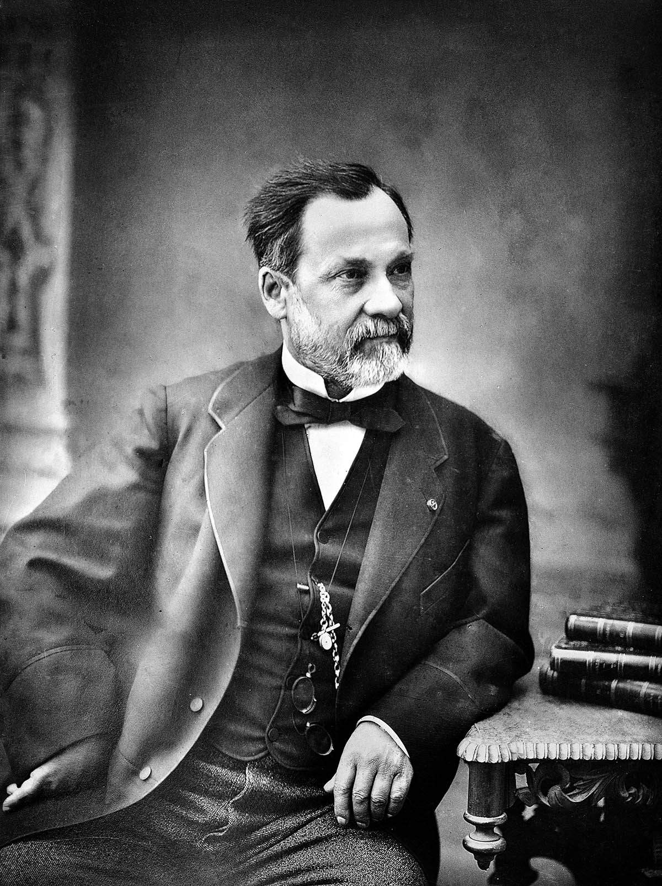

หลุยส์ ปาสเตอร์(Louis Paster):

หลุยส์ ปาสเตอร์ เป็นนักเคมีและนักจุลชีววิทยาชาวฝรั่งเศส เกิดเมื่อวันที่ 27 ธันวาคม ค.ศ. 1822 (พ.ศ. 2365) และเสียชีวิตในวัย 72 ปี เมื่อวันที่ 28 กันยายน ค.ศ. 1895 (พ.ศ. 2438) ซึ่งเขาคนนี้ถือว่าเป็นนักวิทยาศาสตร์ที่ช่วยชีวิตผู้คนมากที่สุดคนหนึ่งเลยทีเดียว เพราะเป็นผู้คิดค้นวิธีรักษาโรคต่าง ๆ มากมาย เช่น โรคพิษสุนัขบ้าและโรคแอนแทรกซ์ ยิ่งไปกว่านั้นยังช่วยทำให้เราสะดวกสบายมากขึ้น จากการคิดค้นวิธีพาสเจอร์ไรซ์ เพื่อฆ่าเชื้อโรคและถนอมอาหารให้เก็บได้นานขึ้นอีกด้วย